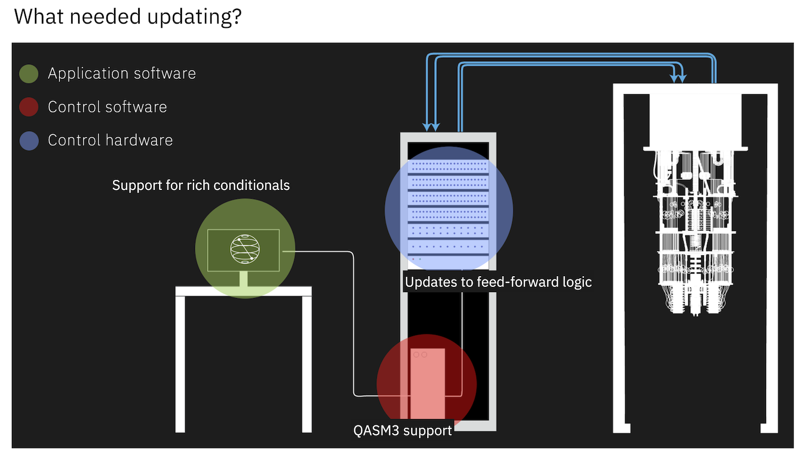

Dynamic circuits - II#
- Qiskit IBM Provider: pip install qiskit-ibm-provider
Background#
qiskit-ibm-provider#
Up until now we have used IBMQ.load_account() and other functionality of the qiskit-ibmq-provider package that comes installed when doing pip install qiskit. This has been the manner in which IBM Quantum systems have been accessed for the last 3.5 years. Given the present-day status of quantum technology 3.5 years is an eternity, and some design decisions from long-ago have now come to haunt us. As such, to better implement things like dynamic circuits, better support for more complex hardware configurations, etc, the internal quantum circuit compilation pipeline had to be reworked.

Because of the number of changes required in the underlying software and hardware, as well as a bit of marketing, IBM Quantum decided that a new package was needed to accomplish what needs to be done.
The qiskit-ibm-provider is one of two ways to access IBM hardware going forward (the other is the Runtime, which we will discuss shortly). We could have used this package earlier, but currently there are some limitations:
1. The Aer simulator currently cannot build a noisy from a backend from the new provider (V2 backends)
Because a lot of work involves noisy simulations, this greatly limits the usefulness of this new provider until this is fixed in Aer.
Dynamic circuits#
So far we have used only basic dynamic circuits with measurement and reset pairs. While useful, these capabilities alone do not enable the full richness of dynamic circuits. Rather we really want generic expressions involving things like for/if-else/when statements that allow for branching.
The qiskit-ibm-provider allows for passing dynamic circuits with branching logic such as that listed above using dynamic=True keyword argument in backend.run(). That is to say, to execute a dynamic circuit job we will use code that looks like:
job = backend.run(circuits, shots=shots, dynamic=True)
where dynamic=True tells the control software to use the updated pathway for dynamic circuits. Conversely, the default dynamic=False option uses the legacy pipeline, and thus cannot handle general dynamic circuits.
In what follows we will begin to explore dynamic circuits through several example circuits, starting once again with our BV example
Frontmatter#
import numpy as np
from qiskit import *
from qiskit.quantum_info import hellinger_fidelity
# Transpiler passes for optimizing dynamic circuits
from qiskit.transpiler import PassManager
from qiskit.transpiler.passes.optimization import ResetAfterMeasureSimplification
# Load the QASM3 exporter
from qiskit import qasm3
# Plotting tools
import matplotlib.pyplot as plt
try:
plt.style.use('quantum-light')
except:
pass
%config InlineBackend.figure_format = 'retina'
IBM Provider and backend selection#
We begin by importing what we need from the new IBM provider. The syntax for doing so is a bit different than the older IBMQ way that usually comes as a part of Qiskit:
from qiskit_ibm_provider import IBMProvider
provider = IBMProvider()
We can now look to see what backends are available:
provider.backends()
[<IBMBackend('ibmq_qasm_simulator')>,
<IBMBackend('ibmq_qasm_simulator_de')>,
<IBMBackend('ibmq_quito')>,
<IBMBackend('simulator_statevector')>,
<IBMBackend('simulator_mps')>,
<IBMBackend('simulator_extended_stabilizer')>,
<IBMBackend('simulator_stabilizer')>,
<IBMBackend('ibm_lagos')>,
<IBMBackend('ibmq_montreal')>,
<IBMBackend('ibmq_toronto')>,
<IBMBackend('ibmq_dublin')>,
<IBMBackend('ibmq_kolkata')>,
<IBMBackend('ibmq_mumbai')>,
<IBMBackend('ibmq_lima')>,
<IBMBackend('ibmq_belem')>,
<IBMBackend('ibmq_guadalupe')>,
<IBMBackend('ibmq_jakarta')>,
<IBMBackend('ibmq_manila')>,
<IBMBackend('ibm_bangkok')>,
<IBMBackend('ibm_hanoi')>,
<IBMBackend('ibm_kawasaki')>,
<IBMBackend('ibm_nairobi')>,
<IBMBackend('ibm_cairo')>,
<IBMBackend('ibm_auckland')>,
<IBMBackend('ibm_perth')>,
<IBMBackend('ibm_wellington')>,
<IBMBackend('ibm_peekskill')>,
<IBMBackend('ibm_washington')>,
<IBMBackend('ibm_ithaca')>,
<IBMBackend('ibm_oslo')>,
<IBMBackend('ibm_geneva')>,
<IBMBackend('ibm_kyiv')>,
<IBMBackend('ibm_prague')>,
<IBMBackend('alt_auckland')>,
<IBMBackend('alt_cairo')>,
<IBMBackend('alt_ithaca_stretch')>,
<IBMBackend('alt_montreal')>,
<IBMBackend('simulator_qasm3')>,
<IBMBackend('ibmq_bogota')>]
You can see that there are a large number of backends here, but I did not specify the Hub. Group, or Project (HGP) that is to be used. Rather, the new provider object automatically selects the HGP for you following a list of rules. If one wants to specify the HGP they are going to use, then it is done via the instance keyword argument. E.g. if I want only the open systems then I can do:
# Specify a source in the format: hub/group/project.
open_provider = IBMProvider(instance="ibm-q/open/main")
Note that as of version 0.1.0, the above code returns all backends: Github Issue #454
Let us now select the system on which we wish to run our dynamic circuits:
backend = provider.get_backend('ibm_peekskill')
Note that not all systems support dynamic circuits. In order to find out which ones do, one can look for the qasm3 string in the supported features:
backend.configuration().supported_features
['qobj', 'qasm3']
Or one can filter for systems supporting dynamic circuits:
provider.backends(dynamic_circuits=True)
[<IBMBackend('ibm_lagos')>,
<IBMBackend('ibmq_dublin')>,
<IBMBackend('ibmq_kolkata')>,
<IBMBackend('ibmq_mumbai')>,
<IBMBackend('ibmq_jakarta')>,
<IBMBackend('ibmq_manila')>,
<IBMBackend('ibm_kawasaki')>,
<IBMBackend('ibm_nairobi')>,
<IBMBackend('ibm_auckland')>,
<IBMBackend('ibm_perth')>,
<IBMBackend('ibm_wellington')>,
<IBMBackend('ibm_peekskill')>,
<IBMBackend('ibm_washington')>,
<IBMBackend('ibm_oslo')>,
<IBMBackend('ibm_geneva')>,
<IBMBackend('alt_auckland')>,
<IBMBackend('simulator_qasm3')>]
"Support" for dynamic circuits does not mean it is actually fully operational! Your mileage may vary.
Dynamic BV#
In our previous look at dynamic BV we had circuits with many measurement+reset pairs. Repeating our circuit generation code here:
def dynamic_bv(bitstring):
"""Create a Bernstein-Vazirani circuit from a given bitstring.
Parameters:
bitstring (str): A bitstring.
Returns:
QuantumCircuit: Output circuit.
"""
qc = QuantumCircuit(2, len(bitstring))
# Prepare the |-x> state on target qubit
qc.x(1)
qc.h(1)
# For each bit (0 or 1) build a simple circuit block
for idx, bit in enumerate(bitstring[::-1]):
# Initial H gate on control
qc.h(0)
# If bit=1, do a CNOT gate
if int(bit):
qc.cx(0, 1)
# Final H gate to convert phase to computational-basis
qc.h(0)
# Measure
qc.measure(0,idx)
# If not at the final bit, recycle and reset qubits
if idx != (len(bitstring)-1):
# Reset control qubit for reuse
qc.reset(0)
# reset target qubit to minimize dephasing
qc.reset(1)
# Prepare the |-x> state on target qubit again
qc.x(1)
qc.h(1)
return qc
Let us generate circuits for bit-string lengths of 2 -> 13:
dyn_bv_circs = [dynamic_bv('1'*N) for N in range(2,13)]
Let use plot the length=3 BV circuit
dyn_bv_circs[1].draw('mpl')
Because the new IBM provider allows us to toggle the internal circuit compilation pipeline using dynamic=True, lets begin by testing the legacy and new pipelines on these familiar circuits.
Here I will manually select qubits 8 and 9 since their calibration readout errors look good. First we transpile:
dyn_trans_qc = transpile(dyn_bv_circs, backend, optimization_level=3, initial_layout=[8,9])
And now we execute the batch of circuits twice. First, using the new dynamic circuits pathway, and second using the old way:
job1 = backend.run(dyn_trans_qc, shots=10000, dynamic=True)
job2 = backend.run(dyn_trans_qc, shots=10000)
we now collect the results,
new_bv_counts = job1.result().get_counts()
old_bv_counts = job2.result().get_counts()
and compute the resulting fidelities:
dyn_fidelities = [hellinger_fidelity(cnts, {'1'*(idx+2): 1}) for idx, cnts in enumerate(new_bv_counts)]
reg_fidelities = [hellinger_fidelity(cnts, {'1'*(idx+2): 1}) for idx, cnts in enumerate(old_bv_counts)]
We now plot our results. Because these are the exact same circuits and running on the same device, we expect that the answers closely match, up to perhaps finite sampling noise.
fig, ax = plt.subplots()
ax.plot(range(2,13), reg_fidelities, label='Legacy-pipeline')
ax.plot(range(2,13), dyn_fidelities, label='QASM3-pipeline')
ax.set_xlabel('Bits')
ax.set_ylabel('Fidelity')
ax.legend();
Well, we see that the results do not agree at all, 😞, and that the old pipeline is quite a bit better. The reason for this is likely due to the beta nature of the new pipeline; there are some tweaks to timing and gates that still needs to be done. There is not much we can do about this, so lets just see if we can improve upon these results.
Measure+reset pair simplification#
Our current performance bottleneck is measure+reset pairs in the circuits, ie.
qc = QuantumCircuit(1, 1)
qc.measure(0, 0)
qc.reset(0)
qc.draw('mpl')
We have seen that a reset on IBM Quantum systems is itself a measurement followed by a conditional x-gate. Thus the full circuit looks a bit like:
qc2 = QuantumCircuit(1, 2)
qc2.measure(0, 0)
qc2.measure(0, 1)
qc2.x(0).c_if(1, True)
qc2.draw('mpl')
Now, we have already seen that measurements are the most error prone operations on IBM Quantum systems, and take quite a bit of time (~2 CX gates worth of time). On this device, the average measurement error rate is
np.mean([backend.properties().readout_error(kk) for kk in range(backend.num_qubits)])
0.01950740740740739
So every measure+reset pair is quite costly in terms of both error and duration. If we could reduce the number of measurements, then the performance would greatly improve. It turns out that we can. Specifically, when measuring the state of a quantum system \(|\psi\rangle\), the state is projected onto one of the eigenstates of the corresponding measurement operator. In this case that is one basis states in the computational basis. Immediately after the measurement, the state would begin to evolve again until acted upon by another measurement or projective operation such as a noisy Kraus operator. However, if our measurements act instantaneously, performing an additional measurement right after the first results in the exact same computational basis state, as the system has had no time to evolve. This is an example of the Zeno effect; the state of a system is frozen upon fast repeated measurements.
We can use this fact to drop the measurement originally included in the reset, and condition the x-gate on the result of the first measurement. Because measure+reset are so ubiquitous in dynamic circuits, Qiskit can auto-simplify combinations of operations. This is done via the ResetAfterMeasureSimplification transpiler pass:
pm = PassManager(ResetAfterMeasureSimplification())
collapsed_qc = pm.run(qc)
collapsed_qc.draw('mpl')

Optimized dynamic BV#
We are now in a position to further optimize our dynamic BV circuits by collapsing measure+reset pairs down to just a single measurement and conditional x-gate
collapsed_circs = pm.run(dyn_trans_qc)
collapsed_circs[0].draw('mpl', idle_wires=False)
We can now run these circuits using dynamic=True (it will fail otherwise), and look to see how much the fidelity improved through this simplification.
job3 = backend.run(collapsed_circs, shots=10000, dynamic=True)
collapsed_counts = job3.result().get_counts()
collapsed_fidelities = [hellinger_fidelity(cnts, {'1'*(idx+2): 1})
for idx, cnts in enumerate(collapsed_counts)]
fig, ax = plt.subplots()
ax.plot(range(2,13), reg_fidelities, label='Legacy-pipeline')
ax.plot(range(2,13), dyn_fidelities, label='QASM3-pipeline')
ax.plot(range(2,13), collapsed_fidelities, label='QASM3-collapsed')
ax.set_xlabel('Bits')
ax.set_ylabel('Fidelity')
ax.legend();
Nice! We see that by being just a bit smarter, we have been able to greatly improve the fidelity of our dynamic BV circuits. Because this simplification is so powerful, it is recommended to always use it when doing measurement+reset on IBM Quantum systems.
OpenQASM 3#
Up until now we have been using Qiskit to build quantum circuits. This is of course the obvious thing to do, but directly building up circuits in Qiskit does have its limitations:
1. It is difficult to programmatically build a circuit, especially dynamic ones
2. They cannot be saved in a human readable format
3. They must be made in Python
4. They are not a serialization format
5. They are limited to Qiskit itself
For these reasons, and others, it is beneficial to have another way to create, store, and transmit quantum circuits.
A completely platform-agnostic, text-based quantum circuit representation is provided by the OpenQASM specification. QASM, or quantum assembly language, has been around for almost 20 years, and OpenQASM is the primary flavor of the language. The latest major release, version 3, brings better support for dynamic circuits and include the ability to interact with arbitrary classical code, pulse-level gate definitions, and support for explicit timing control. QASM3 (also true for QASM2) is a Turing complete language, meaning in principle it can perform any computation, if given enough resources (memory and time).
QASM3 is a very convenient format for working with quantum circuits with conditional operations and creating circuits in a universal format from any language where a QASM parser exists. That is to say that QASM3 will allow one to create circuits from any language (C/C++, Rust, Fortran, Matlab, etc…) and allow them to be executed on IBM Quantum hardware.
For now, lets take a look at a QASM3 representation of one of our optimized BV circuits:
print(qasm3.dumps(collapsed_circs[1]))
OPENQASM 3;
include "stdgates.inc";
bit[3] c;
qubit[27] _all_qubits;
let q = _all_qubits[0:26];
rz(pi/2) q[8];
sx q[8];
rz(pi) q[8];
rz(pi/2) q[9];
sx q[9];
rz(-pi/2) q[9];
cx q[8], q[9];
sx q[8];
rz(pi/2) q[8];
reset q[9];
rz(pi/2) q[9];
sx q[9];
rz(-pi/2) q[9];
c[0] = measure q[8];
if (c[0] == 1) {
x q[8];
}
rz(pi/2) q[8];
sx q[8];
rz(pi) q[8];
cx q[8], q[9];
sx q[8];
rz(pi/2) q[8];
reset q[9];
rz(pi/2) q[9];
sx q[9];
rz(-pi/2) q[9];
c[1] = measure q[8];
if (c[1] == 1) {
x q[8];
}
rz(pi/2) q[8];
sx q[8];
rz(pi) q[8];
cx q[8], q[9];
sx q[8];
rz(pi/2) q[8];
c[2] = measure q[8];
Hands-on example#
Find a IBM Quantum system that supports dynamic circuits and find out how many bits you can go out to using the collapsed version of the dynamic BV circuit. As dynamic circuits are still beta, this may fail on some systems.